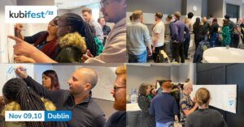
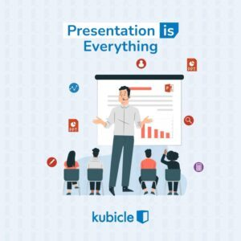
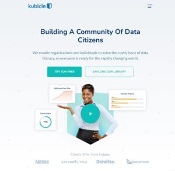
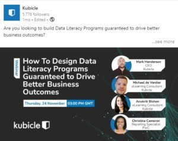

To our Data Citizen Community
2022 was one of Kubicle’s best! …But it wasn’t without its challenges.
With global economies finally emerging from the cycle of Covid-19 lockdowns we were able to return to some resemblance of normal. Our teams were able to travel again to events and exhibitions, our remote team members were able to join us for company meet-ups, and we were able to meet with some of our long-standing customers after an over reliance of doing business remotely. While we’re of course great advocates for doing things remotely (our work) and online (our training), there’s sometimes no replacement for real human interactions.
As a Kubicle training partner, you were in good company. Throughout 2022 our corporate client base rose by more than 30%, many being in the Fortune 100 and Fortune 500 category. Our employee population (aptly called Kubicorns) grew by 38%, and the total number of certificates and diplomas issued on our training application increased by near equal proportions (40%). Certificates and diplomas were shared aplenty by PwC Digital Accelerators, Capitec banking, Distell, KPMG, to name a few.
Towards our Mission
Every year Kubicle gets closer to achieving its mission of making online training in data analytics accessible to everyone, enabling all people to thrive in the modern workplace.
Some interesting research was released this year which further supported the need for Enterprises to accelerate the data democratization agenda.
- Zapier’s report on the no-code boom identified 82% of no-code users started using no-code during the pandemic, and that 90% of no-code users think there has been able to grow faster with the adoption of no-code tools.
- Carruthers and Jackson identified the 64% (in a survey of 211 data leaders) felt most or all employees in their organization were not data literate.
- Qlik identified Data Literacy as being the most in demand skill by 2030 with 35% of employees changed jobs in the last year as their employer did not offer enough upskilling and training opportunities
- And of course, here at Kubicle we see the regular impact of Data Literacy on organizations, with some of our learners claiming 30%+ more productivity in their daily activities upon completion of a Kubicle training semester.
If there ever was a prediction for 2023 it would be that organizations who prioritize the data literacy agenda will be those who outperform their peers.
The Year in Numbers
So, what were some of the Kubicle learning trends of 2022?
Let’s review some of our findings below:
- Will the popularity of Excel, particularly in finance or management consulting, ever be challenged? Not for a while anyway. While Kubicle offers technology training on 25+ different subjects, Excel still reigns all. On average, in each month of 2022 there were twice as many course completions in Excel than any other software or subject.
- In the subject league tables, PowerBI overtook PowerPoint as the 2nd most trained-on application in the Kubicle library. Data visualization tools are becoming more and more popular within the Data Citizen community.
- PowerPoint has had its challenges this year holding its 2021 rankings. Kubicle’s growing subject in Data Literacy theory also overtook PowerPoint in 2022, also seeing the most aggressive growth (in the measure of course completions), more than doubling in popularity in 2022. This course has been within our library suite since 2019.
- A notable mention to Alteryx which is edging towards 3rd place in popularity. Despite carrying some of the highest licensing charges of all the softwares we offer training on, Alteryx is seeing some phenomenal adoption in the corporate space.
2022 Notable Mentions
There’s too many to mention them all, but here’s a handpicked selection
Kubicle and Corporate Social Responsibility
This year Kubicle intensified its mission to give back to underprivileged communities. By way of a longstanding allegiance with PwC Jordan, Kubicle paired up with the New Equation to support upskilling of Jordanian youth.
In Italy we’ve also paired up with the non-for-profit Vision Association whose vision is to nurture talent regardless of the context in which it grows. Kubicle is supporting Project Paideia, a 1 year training program which seeks to develop skills necessary for students to excel in their first work experience.
If you would like to know more about how your organization could be supported by Kubicle’s CSR agenda, please get in touch through hello@kubicle.com
Getting Together as a Team

Remote and distributed work is not without its challenges. While the world is coming to grips with the new ways in which work is being done, face-to-face collaboration, team building and socializing certainly has its merits. In November we were delighted to be able to host our first ever Kubifest, with delegates arriving in Dublin (from Kenya, Germany, France, the USA, and even Galway!) for 2 days of teamwork and workshops.
Product and Subject Launches

Of course there was also continued reinvestment into the Kubicle product, with significant enhancements made to the content library as well as the learner and admin application. Of notable mention, we continued our expansion into data theory courses, further expanding our subject module on data literacy, introduced a new subject on data presentation skills, and also extended Alteryx to include Intelligence Suite.
The largest content and product enhancements came with the introduction of Projects and Learning Paths. Projects were introduced to offer learners the opportunity to practice their newfound skills in a simulated business environment. Learning Paths are curated learning experiences, built by Kubicle subject matter experts, that award Kubicle diploma’s upon completion. These two releases alone have been received with much fanfare and epitomize Kubicle’s commitment to premium learning outcomes.
New website

In 2022 Kubicle’s marking website received a lick of paint! In November we dropped the flat icons and images and single toned blue for real people and a slightly more varied color palette. We also added video components and a more navigable content library for subject and topic discovery.

Webinars & Events
In 2022 we also launched our new webinar series based on data citizenship maturity and data democratization. You can watch the first episode on how to design data literacy programs – guaranteed to drive better business outcomes here.
That’s a Wrap!
Wishing you & yours a happy holiday and prosperous 2023
While it’s impossible to highlight all of the achievements in an entire year, we hope you have enjoyed our wrap-up and reflections on the things that were! While 2022 was a great year, we look forward to continuing our mission into 2023 with current and future partners alike.
Wishing you all the most festive of holiday seasons and prosperous New Year.
In data we trust.
Kubicle